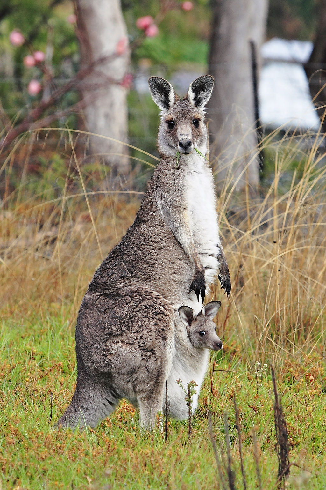
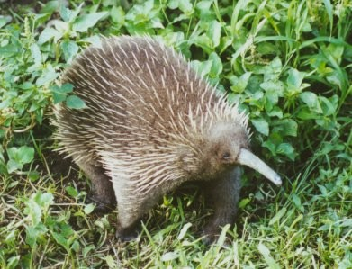
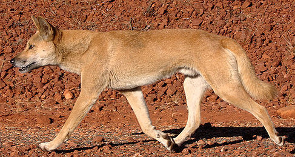

The Outback
In Australia we are very blessed to have very unique and special wildlife. Some of these animals are only located in Australia which makes them extra speical. Some of these animals include:
| Animal | Image | Description |
|---|---|---|
| Kangaroos |  | Description: The kangaroo is the unofficial Australian symbol and a truly beautiful creature despite the fact it is actually considered a pest. |
| Koala |

|
Description: The koala is a cute, cuddly animal even though 70% of them have chlamydia. |
| Echidna |  | Description: Echidnas are ugly in my opinion as they are covered in coarse hair and spikes but they are certainly unique... |
| Dingo |  | Description: Dingos are my favorite Australian animal because it is technically a type of dog (and just so cute). |
| Platypus |

|
Description: The Platypus is an egg-laying mammal and one of the few poisonous mammals. |